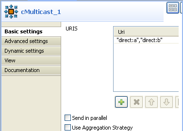
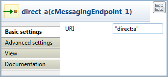
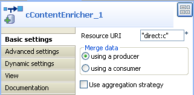
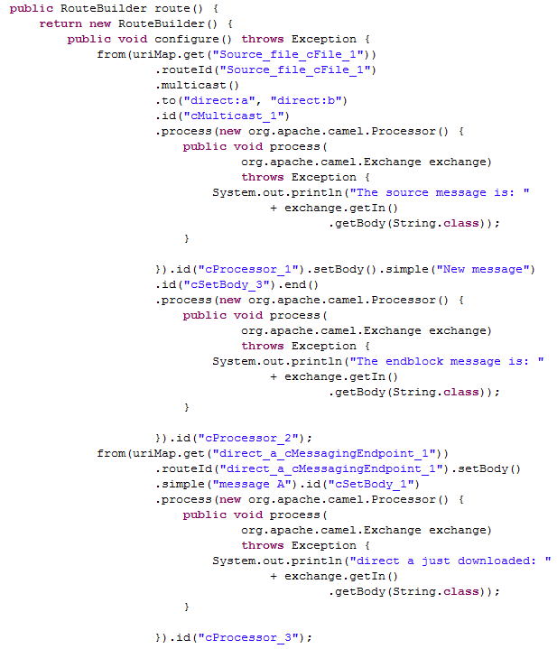
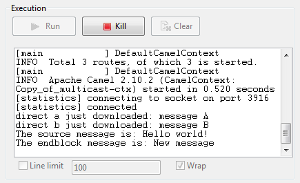
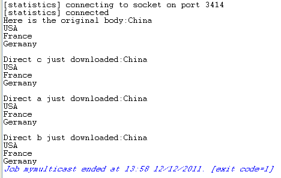

|
Famille de composant |
Routing | |
|
Fonction |
Le composant cMulticast route un ou plusieurs message(s) vers un certain nombre d'endpoints en une seule fois. | |
|
Objectif |
Le cMulticast est utilisé pour router un ou plusieurs message(s) vers un certain nombre d'endpoints en une fois et le(s) traiter de différentes manières. | |
|
Basic settings |
URIS |
Ajoutez autant de lignes que nécessaire dans la table des URIs pour définir les endpoints vers lesquels router les messages. |
|
|
Send in parallel |
Cochez cette case pour diffuser simultanément en multipoint le(s) message(s) vers les endpoints spécifiés. |
|
|
Set timeout |
Cochez cette case et configurez le temps avant suspension dans le champ Timeout, en millisecondes. Si le cMulticast ne réussit pas à envoyer et à traiter les messages durant le temps imparti, il arrête le traitement courant et continue. Cette case apparaît uniquement lorsque la case Send in parallel est cochée. |
|
|
Use Aggregation Strategy |
Cochez cette case et saisissez un Bean Java prédéfini comme stratégie d'agrégation pour assembler les messages de la source des messages en un seul message de sortie. Le dernier message se comporte comme le message sortant. |
|
Utilisation |
Le cMulticast peut être utilisé comme composant intermédiaire ou composant de fin dans une Route. | |
|
Limitation |
n/a | |
Dans ce scénario, un composant cMulticast est utilisé pour router un message vers deux endpoints. Ce message est ensuite ajouté au contenu reçu par le troisième endpoint, à l'aide du composant cContentEnricher.
Pour construire la Route, procédez comme dans les sections suivantes.
Glissez-déposez les composants suivants de la Palette dans l'espace de modélisation graphique : un cFile, trois cMessagingEndpoint, quatrecProcessor, cMulticast et un cContentEnricher. Pour une meilleure identification de la fonction des composants, renommez les trois cMessagingEndpoint respectivement en direct_a, direct_b et direct_c et modifiez le nom des quatre cProcessor en source_print, direct_a_print, direct_b_print et direct_c_print.
Reliez le cFile au source_print à l'aide d'un lien Row > Route.
Reliez le source_print au cMulticast à l'aide d'un lien Row > Route.
Reliez le composant direct_a au cContentEnricher à l'aide d'un lien Row > Route.
Reliez le cContentEnricher au direct_a_print à l'aide d'un lien Row > Route.
Reliez le direct_b au direct_b_print à l'aide d'un lien Row > Route.
Reliez le composant direct_c au direct_c_print à l'aide d'un lien Row > Route.
Procédure 6.1. Configurer la source des données et les récepteurs multipoints
Double-cliquez sur le composant cFile pour ouvrir sa vue Basic settings dans l'onglet Component.

Dans le champ Path, saisissez le chemin d'accès au message source, e.g. "E:/data/input/multicast". Laissez les autres paramètres tels qu'ils sont.
Double-cliquez sur le composant source_print pour ouvrir sa vue Basic settings.

Dans le champ Code, saisissez le code ci-dessous pour obtenir le corps du message source et l'afficher.
String body = exchange.getIn().getBody(String.class); System.out.println("Here is the original body:" + exchange.getIn().getBody(String.class));Double-cliquez sur le cMulticast pour ouvrir sa vue Basic settings.
Dans la table URIS, cliquez sur le bouton [+] pour ajouter une ligne dans laquelle vous devez saisir l'URI des endpoints pour recevoir le message diffusé en multipoint, par exemple "direct:a","direct:b".
Double-cliquez sur direct_a pour ouvrir sa vue Basic settings.
Dans le champ URI, saisissez l'URI de l'endpoint, par exemple "direct:a".
Effectuez la même opération pour direct_b et direct_c puis saisissez les URIs de "direct:b" et "direct:c" respectivement.
Procédure 6.2. Configurer l'enrichissement et l'affichage du contenu
Double-cliquez sur le cContentEnricher pour ouvrir sa vue Basic settings.
Dans le champ Resource URI, saisissez l'URI de l'endpoint dont le contenu entrant sera enrichi par les messages reçus par le cContentEnricher, par exemple "direct:c".
Dans la zone Merge data, sélectionnez using a producer pour que le cContentEnricher route les messages reçus vers "direct:c".
Double-cliquez sur le direct_a_print pour ouvrir sa vue Basic settings dans l'onglet Component.
Dans le champ Code, saisissez le code ci-dessous pour afficher le message reçu par direct_a.
System.out.println("Direct a just downloaded:"+exchange.getIn().getBody(String.class));Effectuez la même opération pour les composants direct_b_print et direct_c_print puis saisissez le code ci-dessous dans leur champ code, respectivement :
System.out.println("Direct b just downloaded:"+exchange.getIn().getBody(String.class));System.out.println("Direct c just downloaded:"+exchange.getIn().getBody(String.class));Appuyez sur Ctrl+S pour sauvegarder votre Route.
Cliquez sur l'onglet Code au bas de l'espace de modélisation graphique afin de visualiser le code généré.
Comme affiché ci-dessus, la route obtient le message original du
cFile_1, l'affiche via lecProcessor_1puis le diffuse en multipoint (.multicast()) versto( "direct:a", "direct:b"). Le message est reçu par ledirect_aet utilisé pour enrichir.enrich("direct:c").Appuyez sur F6 pour exécuter la Route.
Le message original est diffusé en multipoint vers direct_a et direct_b. Il est également utilisé pour enrichir le contenu reçu par le direct_c.
